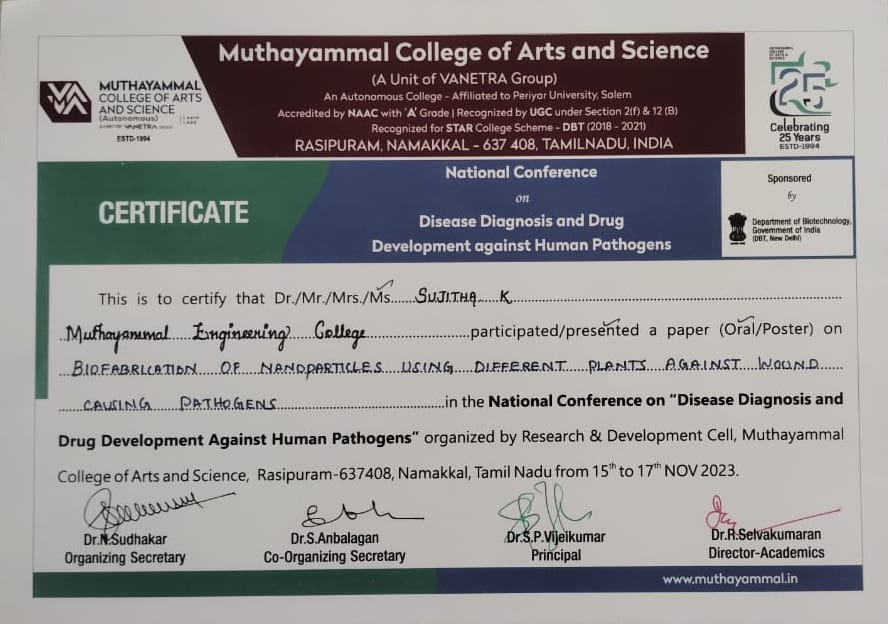
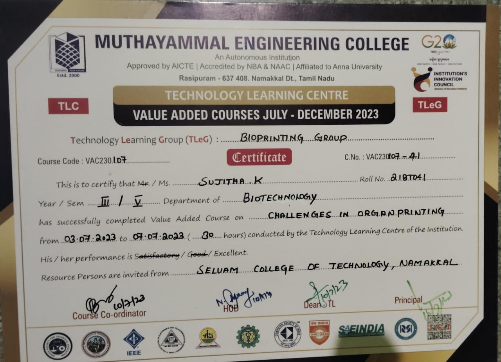
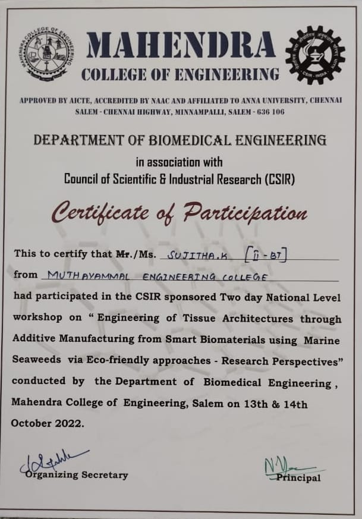

My Blogs
Paper presentation certification
Biofabrication of Nanoparticles using Plant Extracts against Wound- Causing Pathogens.
Presented a research paper on "Biofabrication of Nanoparticles using Plant Extracts against Wound-Causing Pathogens"at the National Conference on Disease Diagnosis and Drug Development against Human Pathogens, organized by the Research and Development Cell, Muthayammal College of Arts and Science, Rasipuram. The study explored the potential of plant-based nanoparticles in combating wound infections, offering a novel and sustainable approach to antimicrobial therapy.
Value Added Course
Challenges in organ printing.
Successfully completing the value-added course on 'Challenges in Organ Printing' conducted by Muthayammal Engineering College, Rasipuram. Gained insights into the latest advancements and obstacles in 3D printing of organs, equipping me with knowledge to tackle complex challenges in the field of tissue engineering and regenerative medicine.
Workshop certification
.
Explored the frontiers of biomaterials and additive manufacturing by participating in a two-day National Workshop on "Engineering of Tissue Architectures through Additive Manufacturing from Smart Biomaterials using Marine Seaweeds via Eco-friendly approaches: Research Perspectives" at Mahendra College of Engineering, Salem. Engaged with experts and peers to discuss innovative solutions for tissue engineering and regenerative medicine, leveraging marine seaweeds and eco-friendly approaches.